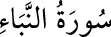

<a name=10308></a><br/>
<b>78- NEBE’ SÛRESİ</b><br/>
<i><b>Meâric’den sonra inmiştir; ilk Mekkî sûrelerden olup 40 âyettir. «Nebe’» haber</b></i><br/>
<i><b>demektir. Kıyâmet haberlerini ihtiva ettiği için bu ad verilmiştir.</b></i><br/>
